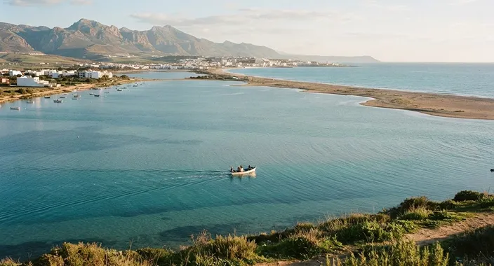
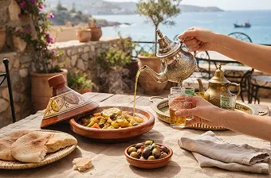

On the lagoon
Kayaking
Paddle quiet turquoise waters and discover the lagoon at your own pace.
2 hours · Easy pace
Explore activity kayaking
Nador's Mediterranean escape
Quiet lagoon waters, mountain trails and a taste of Morocco. Discover Nador with thoughtfully crafted experiences and local guides who make you feel at home.
Locally rooted. Naturally unforgettable.

Marchica Lagoon
Nador · Morocco
Find your kind of adventure
From slow mornings on the water to evenings around the table, make Marchica your own.
On the lagoon
Paddle quiet turquoise waters and discover the lagoon at your own pace.
2 hours · Easy pace
Explore activity kayaking
Along the coast
Set sail for hidden corners, coastal views and a fresh sea breeze.
Half day · All ages
Explore activity boat trips
Into the hills
Follow forest trails to sweeping views of Nador and the Mediterranean.
Half day · Moderate
Explore activity Gourougou hiking
A taste of Morocco
Share local flavors, mint tea and the stories behind a Moroccan table.
3 hours · All ages
Explore activity culinary experiencesSuggested durations. We'll tailor the details to your group, the season and the weather.
Moments that stay with you
A glimpse of the kind of journey we'd love to create for you.
“The lagoon was so peaceful. Kayaking at a gentle pace and hearing our guide's stories made it the highlight of our time in Nador.”
Sofia
Kayaking · Sample guest story
“A beautiful walk above the coast, followed by mint tea and a table full of local flavors. It felt like being welcomed by friends.”
Amine
Hiking & food · Sample guest story
Illustrative sample testimonials for this design. These are not verified customer reviews.
Your journey starts here
Tell us what you love. We'll help you find the right experiences, at your pace.
Personal guidance. No pressure.